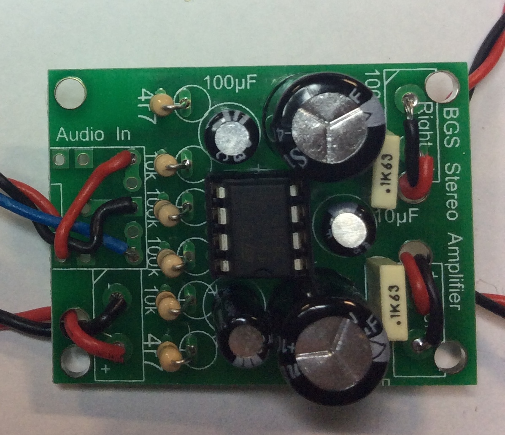
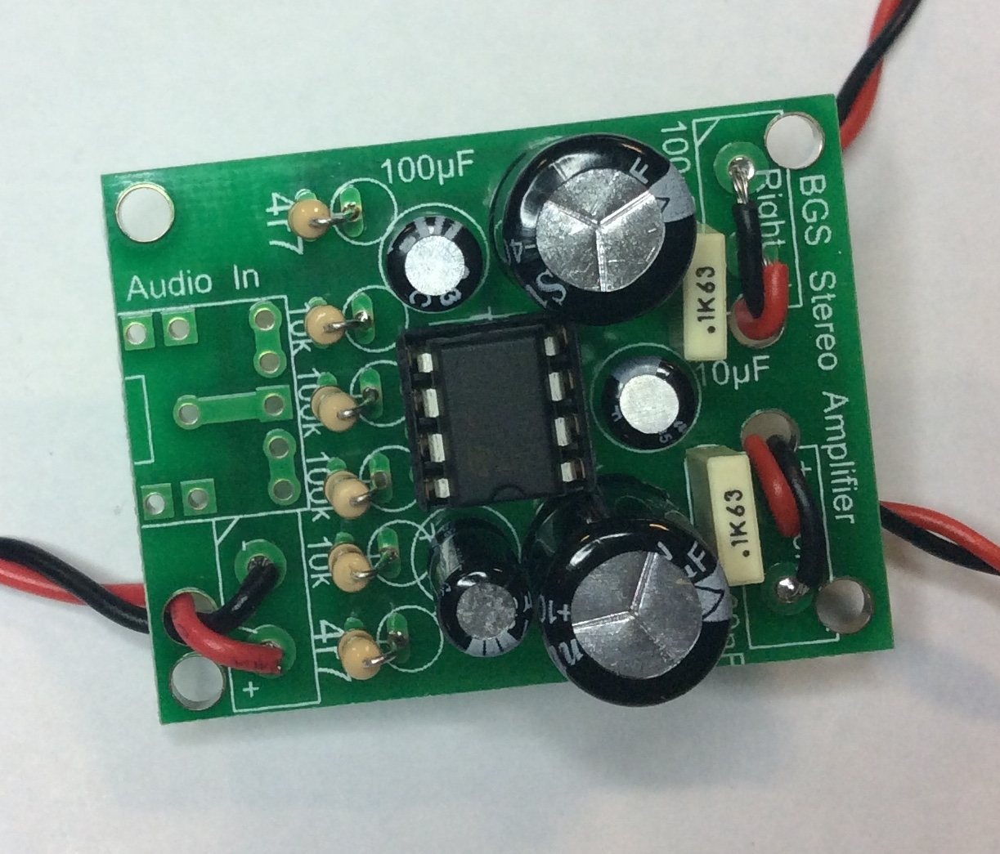

Dressing up
Table of Contents

1 Wiring
Wires in electronic projects are one of the most common areas of product failure. Wires naturally move around, and eventually develop metal fatigue, which causes them to break suddenly. By properly preparing and "dressing" your wires, you can ensure your speaker will be durable, and last for many years to come.
Speaker wires

- There are two kinds of wire we use in our electronics projects: multi-core and single-core.
- Single-core wire is stiffer and more susceptible to metal fatigue. At the same time, it's far easier to poke a piece of single-core through a PCB hole, or into a speaker or switch.
- Multi-core is far more flexible, as it is made of many thin strands which lay together inside the plastic insulation. Unfortunately, these tend to try and "escape" whwn you want to put them into PCB holes, potentially making them trickier to work with.
- As we might need to move the wires around quite a bit in order to install them in our housing, we're going to use multi-core wire in our project.
- At the moment, you may or may not know what you are going to use as the housing for your speaker system. You might need quite long wires, or just short ones. If you're not sure, then as a temporary measure, use about 10cm of wire when following these steps.
The Wire
- Read everything before you do anything
- We'll tackle the speaker wires first. Fetch 2x 10cm Red and 2x 10cm Black lengths of multi-core wire, and strip about 10mm of insulation from each end. The colour isn't particularly important, but its nicer to use the International colour convention of black for ground and red for power.

- Solder the wires into the left and right speaker holes, as shown above.
- Try to get all the wire strands into the holes (you can always trim any stray strands with a side cutter, but its nicer if you don't need to).
- Also try and ensure the insulation is butted up tightly to the PCB, so there's no risk of an electrical short later on, when the PCB is squeezed inside its housing.
- At the moment, the solder you've used will have made the multi-core wire quite stiff; joints between PCBs and wires are the single most common area for failure. We can help reduce this by using the strain relief holes that are located next to each pair of speaker wires. Carefully poke each pair of wires through their nearest strain relief hole, and pull them through.
- Once done, twist the wire pairs together to keep them neat.
- Repeat this process with a PP3 (9V) Battery clip, again using the strain relief hole. With the battery clip its easier to twist the wire pairs together first, then to feed it through the strain relief hole, then to solder the wires into the PCB.
- You'll want to be able to turn on and off the amp when its not in use, to preserve the battery life. Fetch a mini-slide switch, and cut the red PP3 wire about half-way down its length, and solder one of the ends to the middle (known as "common") lug on the switch. Solder the other end of the red wire to one of the outside lugs.

Speak Up
- With the wiring complete, we can now attach our speakers. You can always replace the speakers yourself at home with something bigger, if you want. As long as they're 8\ohm speakers (this is written on the back), and not more than 2W, you should be fine.
- If you look on the back of the speaker, you'll see two small metal "lugs" that you'll be soldering wires onto. You'll also see that + and - are clearly marked, so you can tell where to connect your wires.
- Pass the stripped end of the red wire through the + lug, wrap the loose end of the wire around the lug. Now use the soldering iron to solder the wire in place. Repeat with the black wire and the - end.
- Do the same for the other speaker.

- This is a good time to get a TDA2822M Stereo Amplifier IC from the teacher, and insert it into the chip carrier. Make sure the notch in the top of the chip lines up with the notch in the chip carrier (and on the PCB)!